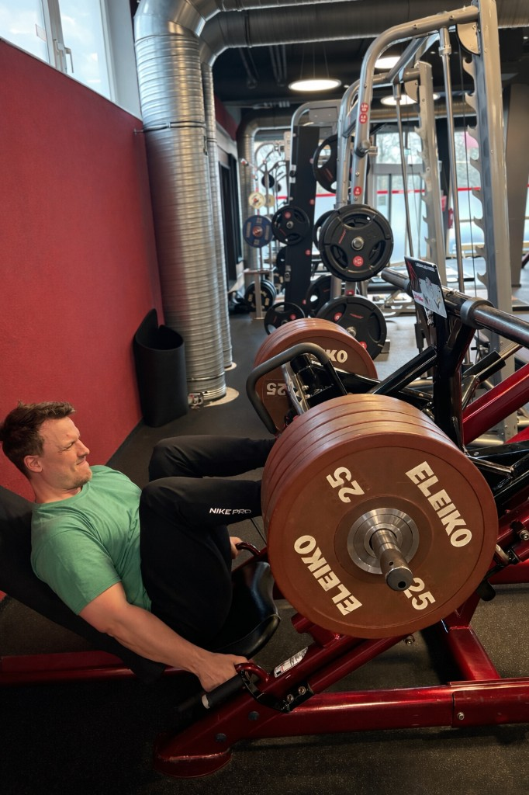
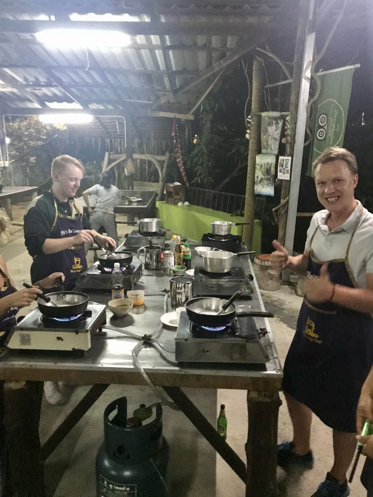
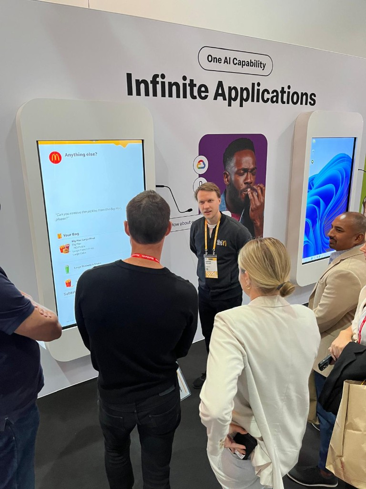

Strategy into execution
- Balance long-term architecture with near-term impact.
- Break complex problems into achievable milestones.
Introduction
Senior Department Head – Deployment, McDonald's
I lead global technology deployment so ambitious change lands cleanly in markets — especially across IOM and the US — connecting strategy, architecture, and delivery so it works in real restaurants, for crew and guests.
At a glance
How I show up as a leader
From technical product management to global deployment and market readiness.
Turns ambiguity into clear, executable plans that teams can own.
Balancing central standards with local realities so change is sustainable.
Not just shipping once, but being able to ship reliably.
In 15 seconds
How to think about working with me.
Context
I lead global technology delivery at scale — ensuring what we design centrally works for restaurants, crew, and guests.
Background
Product, architecture, and deployment — deployment on global scale.
Strength
Turning ambiguity into clear, executable plans.
Environment
Complex global settings — balancing standards with local realities.
Priority
Quality, resilience, and learning — not just "go-live" moments.
A practical guide to how I think and work — meant to accelerate our partnership.
A starting point for conversation, not a finished picture.
Leadership approach
Working together
If we're working closely together, here's what you can expect from me — and what I'll expect from you — so we can move fast with trust.
Clear on goals, constraints, success measures. Misaligned? I'll slow us down to fix it.
Data > opinions. Challenge my thinking when you see different risks or opportunities.
Teams own problems end-to-end. Clear direction, then room to solve.
Direct and timely — if I'm moving too fast or missing something, tell me. I'll do the same.
Change & transformation
5 real transformation scenarios. Pick how you'd naturally respond — then see if we think alike.
Answer all 5 to see your result
We're behind on a major platform change. Execs are pushing for a faster global rollout, but data shows 3 markets have gaps in readiness.
The platform has accumulated significant tech debt. Business partners want features, but architects warn velocity will keep declining without foundational work.
Your teams have been through 3 major changes in 18 months. Energy is low. Leadership just announced another transformation program starting next quarter.
You're leading a cross-functional transformation. Tech wants a full platform rebuild, Ops wants minimal disruption, Markets want fast local wins. No consensus in sight.
Your pilot had serious issues — low adoption, ops complaints. Some leaders want to cancel; others say "it's just one market" and want to proceed globally.
Where partnership matters
I do my best work when we're structured, data-informed, and focused on outcomes. These are the spaces where strong partners around me make the biggest difference.
Circular discussions without owners or timelines.
Help: Propose owner + date + options with trade-offs.
Opinion-heavy without evidence or real voices.
Help: Gather input first, then come back sharper.
Politics without outcome focus drains energy.
Help: Partner on narratives that connect to real impact.
In all of these spaces, I work best with peers and my leadership team who complement my focus on strategy, delivery, and product/technology depth so we cover the whole field together.
Outside work
How I spend time outside the office shapes how I show up at work: how I recharge, how I learn, and how I connect with people.

I go to the gym regularly and have a personal trainer and nutritionist background . I enjoy structured progress — whether it's in the gym or in how teams grow.
I love long-distance travel , especially across Southeast Asia . New places, food, and conversations help me reset perspective and bring back fresh ideas.

I'm a foodie and home cook , often experimenting in the kitchen. For me, food is both a creative outlet and a way to connect with people and cultures.

I used to be heavily into gaming — these days my creative outlet is building new applications with AI . It keeps me close to technology while experimenting with new ways of working.
Working with ambitious leaders to build an environment where complex change feels manageable , our teams feel trusted and supported , and the outcomes are felt in restaurants, not just in slideware .